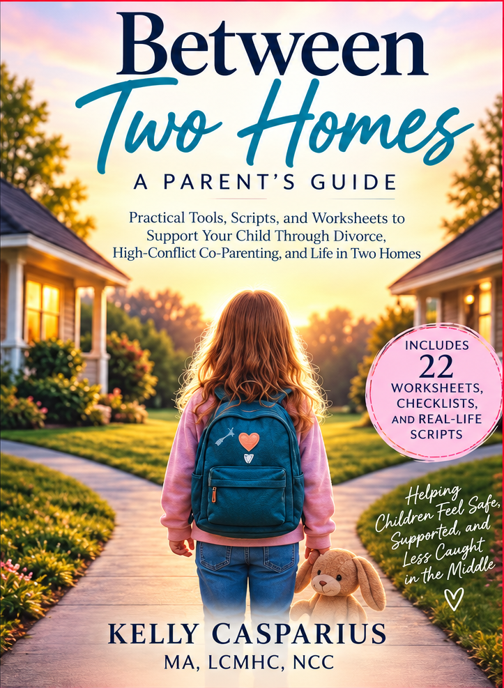

Children
Gentle tools that give children language for big feelings and help them make sense of change.
Life changes can be hard to explain—especially to children. Rylami creates thoughtful, therapist-informed resources that give families and helping professionals practical ways to talk about big feelings, navigate change, and help children feel understood and supported.
A therapist-informed resource created to help families navigate separation, divorce, co-parenting, and life between two homes—with the child’s emotional well-being at the center.
Explore Between Two Homes
Support should feel understandable, useful, and human—wherever you are in the journey.
Gentle tools that give children language for big feelings and help them make sense of change.
Practical guidance for supporting children while navigating the complicated parts of family life.
Thoughtful resources designed to support meaningful conversations with children and families.
Real life rarely fits neatly into a label. Start with what feels closest to what’s happening right now.
Rylami was created from the belief that families deserve thoughtful resources that feel both grounded and approachable. Each resource brings together professional insight, compassion, and practical language to help make difficult moments easier to talk about and navigate.
More about Rylami →Join the Rylami list for new resources, practical ideas, and thoughtful support for life’s changing seasons.